Mapping relative temperature, relative humidity, temperature, and location with weather data using LEDs and a Raspberry Pi.
December 12, 2024
Mikayla Lahr (mrl242) and Mahathi Andavolu (ma2339)
Read The ReportThe objective of this project is to design and test a real time weather map using a Raspberry Pi, piTFT screen, and a 32x32 LED Matrix. An API from Open Weather Map is used to collect temperature and humidity weather data for 17 locations in New York State. The collected weather data is then displayed on the piTFT screen and the LEDs corresponding to each desired location are assigned a color based on the collected data.
Link Video
The components of this project include a Raspberry Pi, piTFT screen, and a 32x32 LED Matrix. An interactive weather map will be created to display real time weather data. The numerical data for temperature and humidity, as well as the local weather data for temperature and precipitation will be displayed on the piTFT. In addition, specific LEDs on a 32x32 LED Matrix will be assigned to 17 different locations in New York State. Each LED will be assigned a color that will correspond with the temperature and humidity. When the system is powered on there is a start screen followed by four different user options. These options include:
After we decided to do a weather map using LEDs for the project, we started thinking of potential implementation ideas of various features for the design. For hardware implementation we considered using LED strips for the map. This approach would involve sautering the LED strips together everytime the strip was cut. Instead of sautering the LED strips together we decided to use a 32x32 LED mmatrix. This decision helped us remove sautering time and allowed us to focus on implementing more features of the system, while removing the concern for potential hardware issues from incomplete sautering. In addition, when planning the map we initially considered doing the entire United States. We decided that the area was too large to get the detail in location that we wanted the system to have and reduced the size to the northeast United States. We further reduced the area to New York State after testing out different size maps on the LED matrix. One of the earliest ideas that we decided on for the software implementation was the ability for the system to display the desired numerical weather data on the piTFT screen while the associated color was assigned to the LED for the location of that data point. We considered many different data points before deciding on a design. These data points included:
We wanted to implement multiple types of data collection that we could switch between to make sure that the LEDs were updating the new data and color correctly. We used Open Weather Map to collect the weather data using an API key. The free plan did not include access to future predicted data and we could only use real time data. We decided to collect temperature, humidity, and cloud/rain/snow data.
After deciding on an initial design, we started to assemble the hardware. The hardware included the Raspberry-Pi, piTFT screen, and a 32x32 LED matrix. The Lab 3 kernel was used for the final project. The Raspberry-Pi was powered by the lab provided Raspberry-Pi power supply. The LED matrix was powered by a 5V power supply that attached directly to the back of the matrix. The LED matrix was attached to the Raspberry-Pi using a breadboard. The LED matrix had 16 pins that needed to be connected to the Raspberry-Pi. A diagram of the hardware is below:
Figure 1: Hardware System
Below is a table indicating what GPIO pins on the Raspberry-Pi were used to connect to the pins on the LED matrix.
Table 1: Raspberry-Pi to LED Matrix Wiring
| Raspberry-Pi Pin | LED Matrix Pin | Signal |
|---|---|---|
| GPIO 5 | 1 | Red Row 1 |
| GPIO 13 | 2 | Green Row 1 |
| GPIO 6 | 3 | Blue Row 1 |
| GPIO 12 | 5 | Red Row 2 |
| GPIO 16 | 6 | Green Row 2 |
| GPIO 23 | 7 | Blue Row 2 |
| GPIO 22 | 9 | Line Selection A |
| GPIO 26 | 10 | Line Selection B |
| GPIO 24 | 11 | Line Selection C |
| GPIO 20 | 12 | Line Selection D |
| GPIO 17 | 13 | Clock Pin |
| GPIO 21 | 14 | Latch Pin |
| GPIO 4 | 15 | Output Enable |
| GND | 4,8,16 | Ground |
The hardware was tested by using a python code from Adafruit found here. The example code is attached at the end of the report called testLED.py
When testing the code we saw several LEDs light up in colors red, white, and green. The code was written for a 16x32 LED matrix, which resulted some of the LEDs not turning on during the initial test. We changed the code to be correctly sized for a 32x32 LED matrix by changing the range and adding a d_pin to 'set_row()' in the code.
During testing of the hardware we initially used a power supply that was powered by the lab power supply. At times, the LED matrix would not turn on when powered if there was not enough voltage from the power supply. We switched the power supply to a 5V plug in connector to an outlet. This provides a more reliable voltage for the LED matrix and we had no further issues with powering the LEDs.
The first step for software testing that was performed was getting an API key and collecting weather data. We signed up for an account on Open Weather Map and got an API key from the website. The free plan allows for 60 calls a minute and 1,000,000 calls a month. The API key was implemented in the code API.py and API_with_LED.py that can be found at the end of the report. Throughout our progress on this project we made several updates to how we implemented the API call. Initially we used the latitude and longitude coordinates for the API call for the starting locations, such as in the below line of code.
response = requests.get(f"https://api.openweathermap.org/data/2.5/weather?lat={42.1435257}&lon={-77.0543408}&appid={api_key}",verify=False)
This approach was time consuming, as we needed to find the correct latitude and longitude numbers for each location we wanted to map. Another approach to collecting weather data was used. Instead of inputting the latitude and longitude, we inputted the name of the location we wanted to get data for, such as in the below line of code.
responseAlbany = requests.get(f"https://api.openweathermap.org/data/2.5/weather?q=Albany&limit=1&appid={api_key}",verify=False)
After getting a response, the staus code needs to be checked to confirm that data was collected. A staus code of 200 means that the data is collected. A status code of 403 means that data collection from Open Weather Map is down or data can not be collected at the time. An example of the data output from the API call for Albany, NY is below.
{'coord': {'lon': -73.9662, 'lat': 42.6001}, 'weather': [{'id': 802, 'main': 'Clouds', 'description': 'scattered clouds', 'icon': '03d'}], 'base': 'stations', 'main': {'temp': 272.81, 'feels_like': 270.58, 'temp_min': 271.36, 'temp_max': 274.05, 'pressure': 1019, 'humidity': 50, 'sea_level': 1019, 'grnd_level': 990}, 'visibility': 10000, 'wind': {'speed': 1.79, 'deg': 228, 'gust': 7.6}, 'clouds': {'all': 49}, 'dt': 1734029447, 'sys': {'type': 2, 'id': 19530, 'country': 'US', 'sunrise': 1734005826, 'sunset': 1734038566}, 'timezone': -18000, 'id': 5106841, 'name': 'Albany', 'cod': 200}
The temperature, humidity, and precipitation data for the weather map was pulled from this response output. During our initial testing we noticed that the API would work well sometimes, but not work at other times. Initially, it was thought that on some occasions we would either call the API at the correct time when giving a signal or we would miss the signal. We added a while loop to run the API call and wait for incoming data. This approach did not work and the while loop ran for a minute before we stopped the code. Eventually when running the program again several minutes later, the API call worked on the first try. We realized that the issue was that after exceding the number of calls using the API, data could no longer be connected for several minutes. In order to address this issue, we created a sample set of data in the python code that could be used instead of running the API. This allowed us to not overuse the API key, while still being able to make progress on formatting the piTFT screen display and other features of the system.
Setup LED MapAfter working on setting up the API key, we worked on mapping out the LEDs that are used for each of the 17 locations. To plan out the LEDs the code workingLED.py was reate. This code is a modified version of the code testLED.py. The areas chosen as locations are listed below.
During the process of choosing an LED, initially a small section of LEDs were turned on around each location. Slowly the area of LEDs that were on was decreased and was narrowed down to one LED for each location.
When testing, we noticed some issues with the LEDs flickering. We read other reports for teams that used the LED matrix and talked with other groups using an LED matrix. To solve this issue we created a for loop that turns off all of the LEDs. After the for loop, the LEDs used for each location are turned on. This sequence runs each time the LEDs are refreshed. This solution is implemented in the main code screen_with_LED.py
Main Code Setup and Integrate Data CollectionAfter having the API and LEDs working indepently, we moved on to writing the main code used for the system. The first part of the code sets up the start button titled "Weather Map". The start menu can be seen in the below figure.
Figure 2: Start Screen and Button, MAP has no LEDs turned on
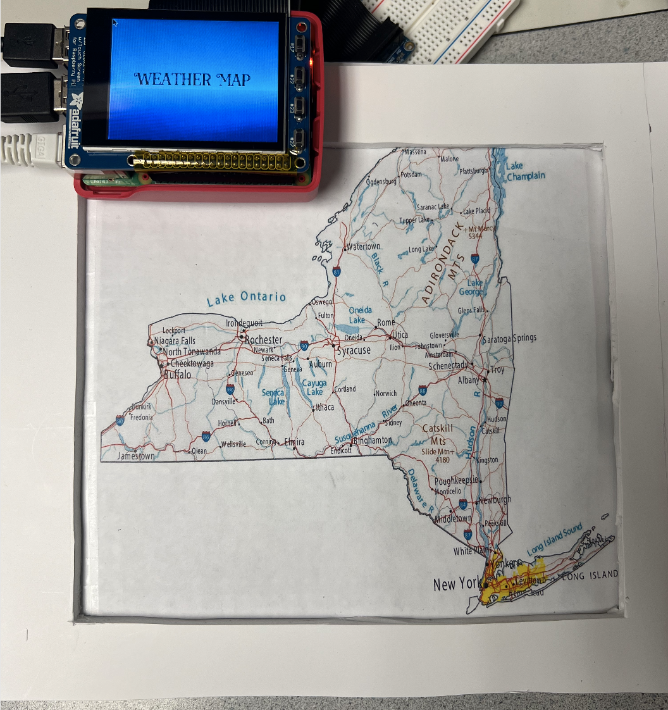After pressing on the start button, there is a menu of four options for the user: relative temperature, relative humidity, cities and towns, and temperature. Any of these options can be selected as seen in the below figure.
Figure 3: System Menu Options
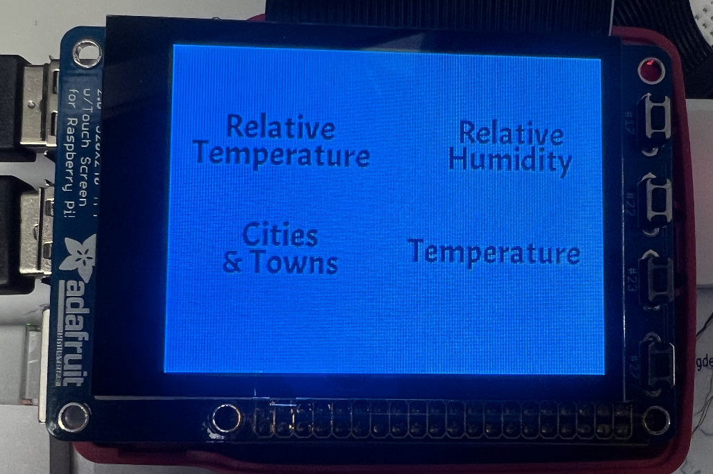The subsections of the code are outlined in the remaining sections of the report. Each subsection has a back button to return to the menu options. In addition to the previously mentioned features, there is a physical quit button on the piTFT using GPIO 27. Weather data is collected using the API key at the start of the code before entering any of the subsections. There is also a timer implemented in the code that calls a function to get new data after ten minutes to keep all of the displayed data updated.
Relative TemperatureThe subsection for Relative Temperature displays temperature data across New York State. The temperature is in Farenheight and the data for each location is displayed on the piTFT screen. In addition, there is a legend on the bottom of the screen that indicates what LED colors are used for each temperature range. Five LED colors are used including white (lowest range), light blue, blue, yellow, and red (highest range). The ranges and LED colors corresponding to each location are assigned in function "LED_Temp_Color". In the function, the temperature for all locations is placed into an array and the maximum and minimum temperature values are are found. The difference between the maximum and minimum temperatures is calculated and then divided by 5. Each range is found by adding the calculated value to the previous range. Range 1 is the minimum temperature value added to the calculated value. A series of if else statements checks the temperature in each location and assigns a color to each location based on the temperature and range values.
Figure 4: Relative Temperature Screen
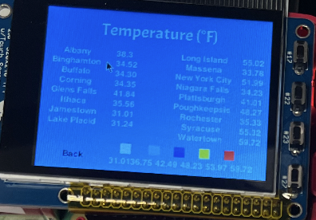Figure 5: Relative Temperature Map
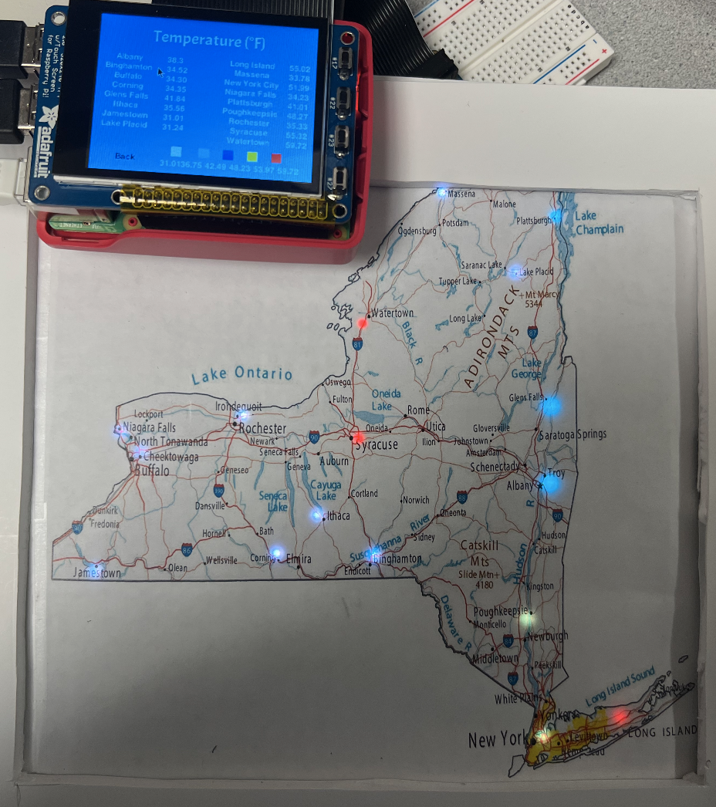Relative Humidity
The subsection for Relative Humidity displays humidity data across New York State. The humidity is in units of percent relative humidity and the data for each location is displayed on the piTFT screen. In addition, there is a legend on the bottom of the screen that indicates what LED colors are used for each humidity range. Three LED colors are used including white (lowest range), yellow, and red (highest range). The ranges and LED colors corresponding to each location are assigned in function "LED_Humid_Color". In the function, the humidity for all locations is placed into an array and the maximum and minimum humidity values are are found. The difference between the maximum and minimum humidity is calculated and then divided by 3. Each range is found by adding the calculated value to the previous range. Range 1 is the minimum humidity value added to the calculated value. A series of if else statements checks the humidity in each location and assigns a color to each location based on the humidity and range values.
Figure 6: Relative Humidity Screen
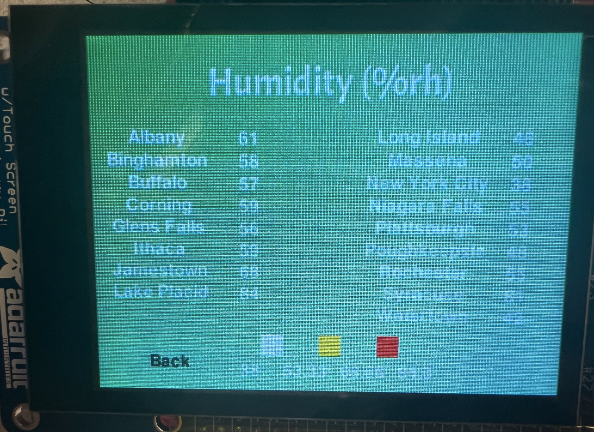Figure 7: Relative Humidity Map
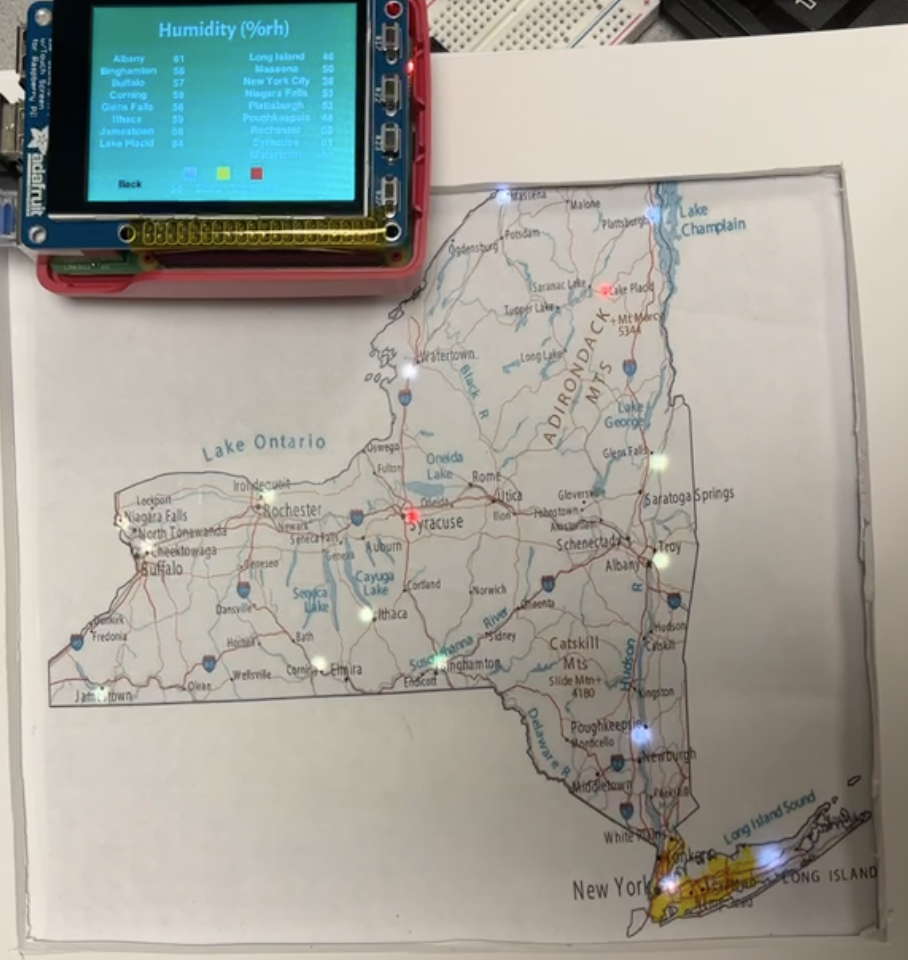Temperature
The subsection for Temperature displays temperature data across New York State. The temperature is in Farenheight and the data for each location is displayed on the piTFT screen. In addition, there is a legend on the bottom of the screen that indicates what LED colors are used for each temperature range. Five LED colors are used including white (lowest range), light blue, blue, yellow, and red (highest range). The ranges and LED colors corresponding to each location are assigned in function "LED_realTemp_Color". In the function, the ranges are predefined and extend from less than 15 to 32 to 50 to over 75 degrees Farenheight A series of if else statements checks the temperature in each location and assigns a color to each location based on the temperature and range values.
Figure 8: Temperature Screen
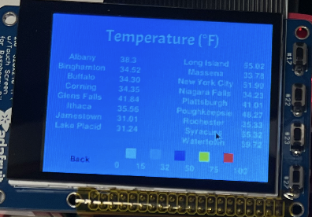Figure 9: Temperature Map
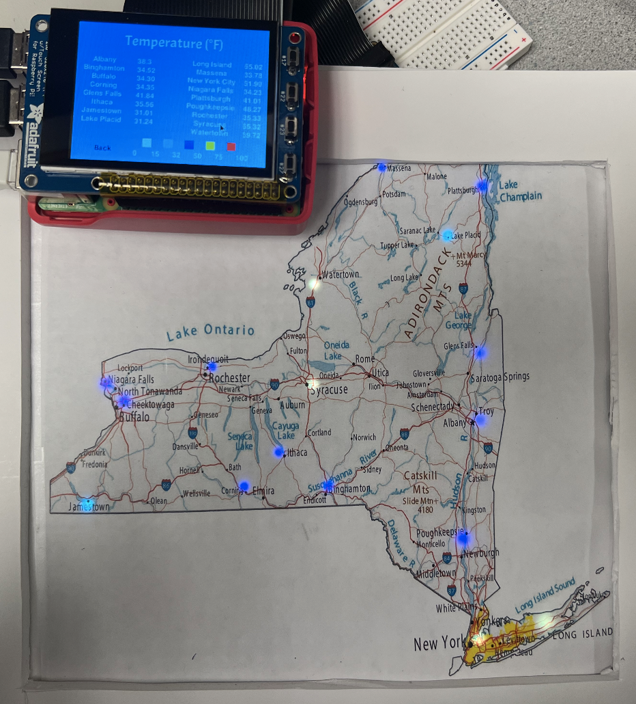Cities and Towns
Figure 10: Cities and Towns Menu Options
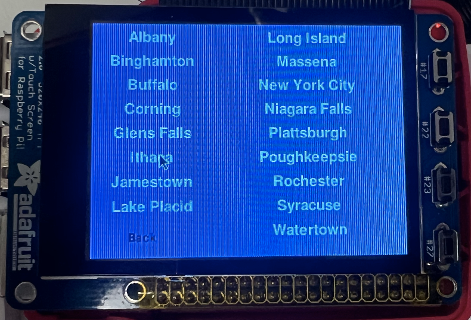Figure 11: Cities and Towns Screen
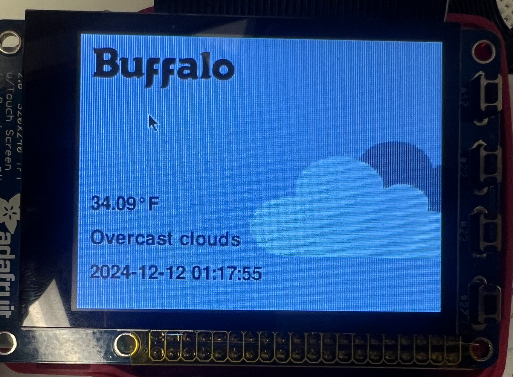Figure 12: Cities and Towns Map, First Press
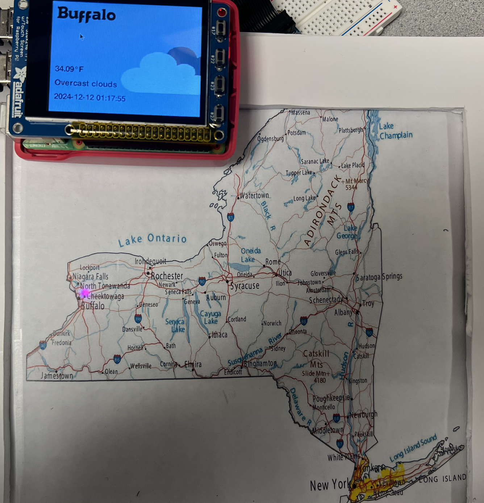Figure 13: Cities and Towns Map, Second Press
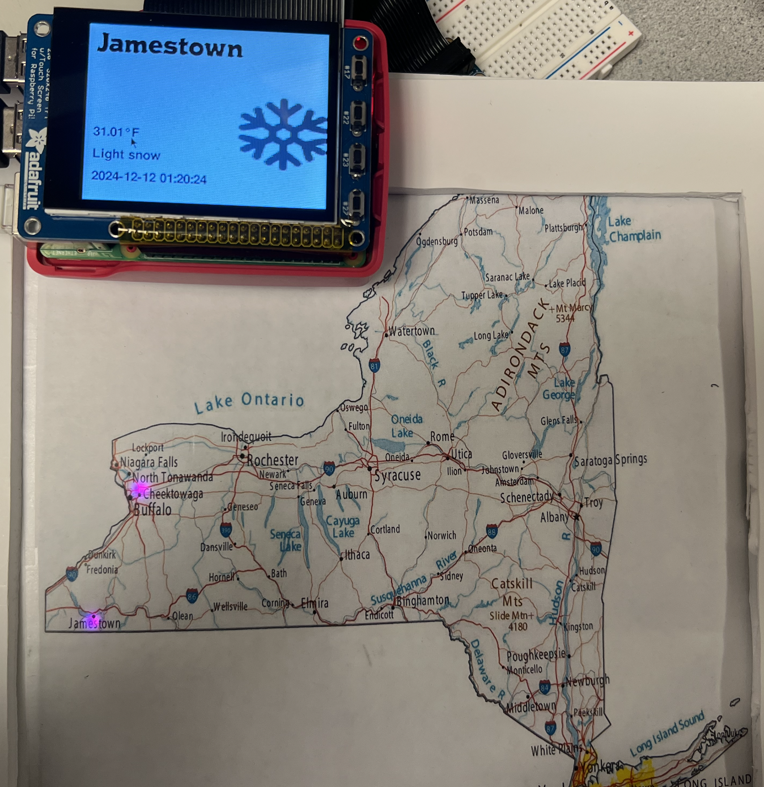Testing Issues
Other than the previously mentioned issues that were worked through involving the API data collection and the flickering LEDs, we also experienced issues with using the touchscreen of the piTFT. Each time we turned on the Raspberry-Pi, the touch screen would have to be set up.
Other ConsiderationsWe considered adding data about relative wind speed and relative cloud coverage to the user menu options. The data collection for this was set up but not implemented in the main code. Instead of these options, we instead implemented Temperature with fixed ranges for the incoming data and display.
A review of the code structure in greater detail is below.
Start Bootstrap has everything you need to get your new website up and running in no time! Choose one of our open source, free to download, and easy to use themes! No strings attached!
This project successfully integrates hardware and software to create an interactive, real-time weather visualization system for 17 locations across New York State. By combining a Raspberry Pi, a piTFT touchscreen, and a 32x32 LED matrix, the system provides a unique and visually engaging way to explore live weather data. The system includes multiple features, such as the ability to display relative temperature and humidity values, as well as city-specific weather details like temperature, precipitation, and weather icons. The dynamic LED matrix enhances the user experience by visually representing data with color-coded LEDs corresponding to each location.
The development process involved overcoming challenges, such as ensuring reliable power for the LED matrix and adapting the software for the 32x32 LED configuration. Using the OpenWeatherMap API allowed for accurate real-time data retrieval and seamless integration into the system. The interactive design and real-time updates make this weather map an intuitive and educational tool for visualizing complex data.
This project demonstrates the potential of combining embedded systems with real-time data APIs to create practical and engaging solutions. Future work could involve expanding the system to include weather forecasts, more locations, or additional data points such as wind speed or air quality. These enhancements would further increase the utility and scope of the system, making it a versatile tool for broader applications. Overall, this project provides a strong foundation for creating interactive and educational tools that make real-time data accessible and visually appealing.
While the project successfully visualizes real-time weather data for New York State, several enhancements could further improve its functionality and expand its applications. One potential area of development is the inclusion of weather forecast data, which would allow users to view not only current conditions but also predicted weather trends for the next few days.
Another improvement could be the addition of more locations to expand coverage beyond New York State, potentially to other regions or the entire United States. Incorporating additional weather parameters such as wind speed, air quality, or UV index could make the system more versatile and informative. Furthermore, integrating advanced visualizations, like animations for precipitation or wind direction, could enhance the user experience.
Lastly, transitioning to a cloud-based API management system could improve scalability and reduce latency, especially when accessing large datasets or supporting multiple users. These enhancements would build on the current project’s strong foundation, increasing its usability and appeal for broader audiences, including educational institutions and public installations.
Start Bootstrap has everything you need to get your new website up and running in no time! Choose one of our open source, free to download, and easy to use themes! No strings attached!
Start Bootstrap has everything you need to get your new website up and running in no time! Choose one of our open source, free to download, and easy to use themes! No strings attached!
Start Bootstrap has everything you need to get your new website up and running in no time! Choose one of our open source, free to download, and easy to use themes! No strings attached!
testLED.py
workingLED.py
getCity.py
API.py
API_with_LED.py
screen_with_LED.py